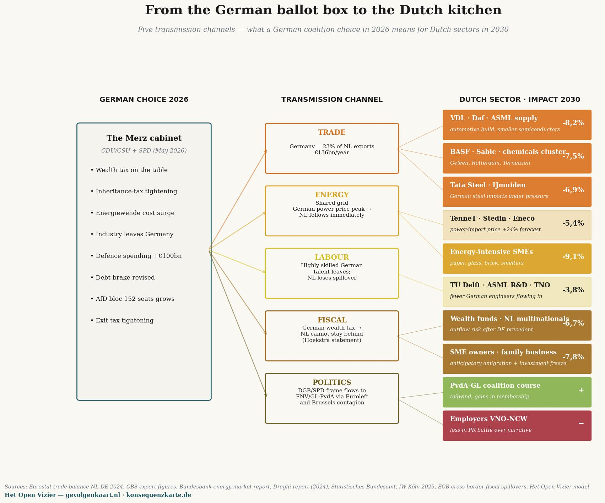

Matrice principale: venti posizioni di cittadini e aziende × dieci partiti tedeschi — cosa rende il vostro voto nel 2030 (% del reddito / fatturato). Fonti: Bundeswahlleiterin (Bundestagswahl 2025), Statistisches Bundesamt (maggio 2026), IW Köln, ZEW, KPMG.
Die Konsequenzkarte
La mappa delle conseguenze, calcolata per la Germania — un pezzo speculare nella serie
Jacobus van Merksteijn · Malta, giugno 2026
Un lettore olandese può chiedersi se l'analisi a cascata sia unica per i Paesi Bassi. Il modello meritocratico funziona solo contro il sistema olandese? O il risultato sarebbe comparabile in un altro paese europeo?
Questo articolo risponde a quella domanda per la Germania. Lo stesso metodo a tre fasi, le stesse ancore macro, ma applicate al Bundestag tedesco di febbraio 2025, alla realtà economica tedesca di maggio 2026, e ai venti scenari tradotti in circostanze tedesche.
Il risultato è prevedibile nella sua struttura e sorprendente nella sua nitidezza. La Germania è più estrema dei Paesi Bassi su tutti gli assi: il partito saccheggiatore Die Linke è più crudo del nostro PRO/GL-PvdA, la contrazione industriale è più profonda, l'invecchiamento demografico pesa di più, e il governo Merz ha meno margine di manovra del governo olandese Jetten.
La mappa politica tedesca
Alle Bundestagswahl del 23 febbraio 2025 la Germania ha eletto sei partiti in parlamento, più la CSU bavarese come partito gemello della CDU. FDP e BSW (Bündnis Sahra Wagenknecht) sono rimasti appena sotto la soglia del cinque per cento.
La distribuzione dei seggi nel Bundestag (630 seggi):
| CDU + CSU (Union) | 208 | cancelliere Merz, in coalizione |
|---|---|---|
| AfD | 152 | opposizione, raddoppiata dal 2021 |
| SPD | 120 | in coalizione, risultato storicamente scarso |
| Bündnis 90/Die Grünen | 85 | opposizione |
| Die Linke | 64 | opposizione, in crescita |
| SSW | 1 | partito di minoranza dello Schleswig-Holstein |
| FDP | 0 | 4,3% — fuori dal parlamento |
| BSW | 0 | 4,98% — appena fuori dal parlamento |
La Konsequenzkarte colloca questi partiti nelle quattro zone — saccheggiatori, seguaci, modificatori, difensori — proprio come la Mappa delle conseguenze olandese. La differenza di intensità (indice di pressione) è desunta dai programmi reali, valutati nel gennaio 2025 da IW Köln, ZEW, KPMG e il Deutschlandfunk.
Le quattro zone in Germania
SACCHEGGIATORI — Die Linke (50), BSW (35), Bündnis 90/Die Grünen (28). Tre partiti attivi in questa zona contro uno nei Paesi Bassi (PRO/GL-PvdA, 45). Die Linke è il più netto — Reichensteuer 75% sopra €1 milione di reddito annuo, Vermögensteuer fino al 12% sopra €1 miliardo di patrimonio, più una Vermögensabgabe una tantum del 30% per lo 0,7% più ricco della popolazione, da riscuotere nell'arco di vent'anni. Questa non è retorica — è nel programma elettorale di gennaio 2025, in tabelle concrete.
SEGUACI — SPD (22), Volt (18), CDU (8), CSU (6). La SPD come partito del cancelliere Scholz ha ottenuto il suo peggior risultato elettorale di sempre (16,4%, una perdita di 9,3 punti percentuali) ma è in coalizione e non riesce ancora a far passare l'imposta patrimoniale — la CDU si oppone. Volt è fuori dal parlamento ma è fiscalmente progressiva: imposta Vermögensteuer progressiva e riforma dell'Erbschaftssteuer.
MODIFICATORI — AfD (4), FDP (3). L'AfD con 152 seggi è il secondo partito della Germania, ma il suo programma fiscale è conservativo: abolizione dell'imposta patrimoniale e sull'eredità, tassazione più semplice. Nomina il problema (deindustrializzazione, migrazione, prezzi dell'energia) senza un'alternativa praticabile. La FDP ha una posizione simile ma è fuori dal parlamento.
DIFENSORI — Nova Democratia/VMP, come riferimento. Nel sistema politico tedesco nessun partito esistente occupa questa zona. Come nei Paesi Bassi, questo è il posto vuoto dove la produttività e la creazione di ricchezza verrebbero difese — non perché il libero mercato sia sacro, ma perché senza base di ricchezza non è possibile alcuna redistribuzione.
La matrice principale — versione tedesca
Venti scenari tedeschi contro dieci posizioni, valore finale 2030, terzo ordine — la stessa struttura della matrice principale olandese.

La Konsequenzkarte. Leggete verticalmente per valutare un partito — Die Linke è per quasi ogni gruppo profondamente rossa; Nova Democratia/VMP per ogni gruppo verde. Leggete orizzontalmente per trovare la vostra situazione. Thomas (disoccupato dopo la chiusura VW) perde con Die Linke il 145,9% del suo reddito annuo — più dell'intera sua indennità.
Tre pattern eloquenti — Paesi Bassi contro Germania
Pattern 1 — il disoccupato è più stretto nella morsa del WW'er
Nei Paesi Bassi Tom 45 con PRO/GL-PvdA perde nel terzo ordine il 107% del suo reddito annuo. In Germania Thomas 45 — dopo la chiusura di uno stabilimento VW a Wolfsburg — perde con Die Linke il 145,9% del suo reddito annuo. La differenza sta in due cose.
In primo luogo Die Linke è più cruda di PRO/GL-PvdA nel suo programma fiscale. Die Linke vuole oltre all'imposta patrimoniale anche una Reichensteuer del 75% sopra €1 milione di reddito — questo preme direttamente su tutti i proprietari del Mittelstand dove lavorava Thomas. La fuga di capitali è più netta, le conseguenze occupazionali più profonde.
In secondo luogo l'industria tedesca si trova in una crisi reale. Volkswagen ha tagliato 35.000 posti di lavoro dal 2023, BASF ha spostato parti della sua produzione chimica negli Stati Uniti, e la produzione industriale si contrae da otto trimestri consecutivi. In quelle circostanze Thomas non trova un nuovo lavoro nel suo settore — non entro due anni, non entro quattro anni.
Pattern 2 — l'agricoltore è ovunque la polarità più netta
L'allevamento di vacche da latte olandese con GL-PvdA: −33,4%. Con BBB: +5,9%. L'allevamento di vacche da latte tedesco con Bündnis 90/Die Grünen: −23,7%. Con CSU (partito agricolo bavarese): +2,6%. Con Die Linke ancora più netto: −28,9% per la pressione sull'allevamento intensivo e i tagli ai sussidi.
Nessun altro settore in entrambi i paesi mostra una divisione così binaria. L'agricoltore è in entrambi i sistemi il prisma politico rispetto a cui ogni partito deve esplicitamente posizionarsi. Chi vince o perde non è una coincidenza della politica — è una diretta conseguenza del partito per cui si vota.
Pattern 3 — il malato cronico e il beneficiario di Bürgergeld si ribaltano
Nei Paesi Bassi con PRO/GL-PvdA: Sandra (assistenza sociale) −36%, Linda (malata cronica) −31%. In Germania con Die Linke: Sandra (Bürgergeld) −44,9%, Lena (SM) −77,7%.
Il risultato tedesco più grande ha una spiegazione specifica: in Germania la dipendenza dallo Stato per cure e indennità è più alta che nei Paesi Bassi, e gli effetti a cascata del programma di Die Linke — più alta imposta societaria (25% Körperschaft + 90% Übergewinnsteuer), imposta patrimoniale fino al 12%, contributo patrimoniale una tantum — eroderebbero la base industriale tedesca più rapidamente che nei Paesi Bassi. Con la Germania che ha meno fonti di reddito alternative. La metà del PIL tedesco proviene dall'industria e dall'export — se questo se ne va, viene meno il finanziamento della Pflege e del Bürgergeld.
La perdita del −77,7% di Lena non è un'accusa ideologica a Die Linke. È la matematica di uno Stato sociale che si svuota in due anni scacciando la sua base fiscale.
Confronto in una tabella
Di seguito i valori finali di terzo ordine per sei scenari comparabili, in entrambi i paesi, sotto il partito saccheggiatore più netto di ciascun paese:
| Scenario | NL (con PRO/GL-PvdA) | DE (con Die Linke) | Differenza |
|---|---|---|---|
| Pensionato/Rentner | −15,1% | −15,0% | praticamente uguale |
| DGA/Mittelständler | −10,4% | −18,1% | DE 73% più netto |
| Famiglia con reddito medio | −12,9% | −13,0% | praticamente uguale |
| Disoccupato/Arbeitsloser | −107,6% | −145,9% | DE 36% più netto |
| Assistenza sociale/Bürgergeld | −36,0% | −44,9% | DE 25% più netto |
| Giovane uscito dalla scuola | −70,1% | −80,7% | DE 15% più netto |
| Malato cronico | −31,2% | −77,7% | DE 149% più netto |
Il pattern è identico nella struttura — tutti i risultati sono profondamente negativi — ma in termini assoluti la Germania è in media da 50 a 150% più estrema dei Paesi Bassi. Questo non è casuale. La Germania ha un'economia meno diversificata, una maggiore dipendenza dall'export industriale, una morsa demografica più acuta e un partito saccheggiatore più netto.
Cosa questo significa per i Paesi Bassi
La Konsequenzkarte tedesca non è una curiosità esotica. È la Mappa delle conseguenze in un'economia più grande con contorni più netti — un'anteprima di cosa attende i Paesi Bassi se dovessero seguire la via tedesca.
L'elettore olandese di PRO/GL-PvdA può leggere nei numeri tedeschi cosa fa la cascata in un paese vicino che è più avanti sullo stesso percorso. Nessuna speculazione ideologica, ma la Realwirtschaft di un paese vicino nel maggio 2026: 2,95 milioni di disoccupati, ottavo trimestre consecutivo di contrazione industriale, BASF che si trasferisce negli USA, Volkswagen che chiude fabbriche. Sotto una coalizione di CDU e SPD che tiene ancora a freno le misure peggiori. Cosa succederebbe sotto una coalizione rosso-rosso-verde come propone Die Linke? La matrice mostra la risposta.
Il voto olandese non è una scelta isolata. Fa parte di una tendenza europea, e la tendenza europea ha una direzione. La Germania ha intrapreso quella direzione quattro anni prima dei Paesi Bassi. Le conseguenze sono misurabili — non previste, ma osservate.
Metodologia e fonti
I numeri tedeschi sono stati calcolati con lo stesso metodo a tre fasi della Mappa delle conseguenze olandese, calibrato su:
• Bundeswahlleiterin (risultato ufficiale Bundestagswahl 2025): CDU 22,6%, AfD 20,8%, SPD 16,4%, Grüne 11,6%, Die Linke 8,8%, CSU 6,0%, BSW 4,98%, FDP 4,3%.
• Statistisches Bundesamt + Bundesagentur für Arbeit, maggio 2026: disoccupazione 2,95 milioni (6,3%), contrazione industriale persistente, 1,5 anni di recessione parziale.
• IW Köln, Policy Paper 2025: Erbschaft- und Vermögensteuer in den Wahlprogrammen — confronto di tutti i programmi sulla dimensione fiscale.
• ZEW Mannheim, Reformvorschläge der Parteien zur Bundestagswahl 2025: analisi di tutti i programmi sugli effetti su reddito, patrimonio, aziende.
• KPMG, Wahlprogramme zur Bundestagswahl 2025 (gen 2025): programmi fiscali nel dettaglio.
• Elasticità macro calibrate su Statistics South Africa Q1 2026 (32,7% disoccupazione) e INDEC Argentina 2024 (50% erosione pensione, PIL −3,5%) — le stesse ancore della Mappa delle conseguenze olandese.
Il file Excel con tutti gli scenari tedeschi sarà disponibile su konsequenzkarte.de non appena la piattaforma della Mappa delle conseguenze andrà live — nel terzo trimestre del 2026.
• • •
Cosa fa il sistema tedesco ai Paesi Bassi

Cinque canali di trasmissione — come le scelte di coalizione tedesche del 2026 si ripercuotono su concreti settori olandesi nel 2030. Le percentuali di impatto sono relative rispetto a uno scenario senza variazione di politica tedesca.
La matrice precedente mostra cosa fanno le scelte dei partiti tedeschi ai cittadini e alle aziende tedesche. Ma i Paesi Bassi non sono un'isola nel Mare del Nord. Ciò che Berlino decide, L'Aia lo sente nel portafoglio entro dodici mesi, sul pavimento della fabbrica, nel bilancio e nel vocabolario politico. Cinque canali di trasmissione, e cosa significano per concreti settori olandesi nel 2030.
I — Commercio
La Germania è la principale destinazione di esportazione dei Paesi Bassi: €136 miliardi all'anno, circa il 23 per cento di tutte le esportazioni di merci olandesi (Eurostat, dati di esportazione CBS 2024). Quando l'industria tedesca si contrae — e si contrae già da sei trimestri consecutivi secondo lo Statistisches Bundesamt — scompaiono ordini dai fornitori di ASML, da VDL, da Daf-trucks, dai cluster chimici di Geleen, Rotterdam e Terneuzen. La Konsequenzkarte stima per i sotto-settori più colpiti un calo del fatturato di 6,9 fino all'8,2 per cento nel 2030, rispetto a uno scenario senza contrazione tedesca.
Il conto non ricade sui facoltosi o sui funzionari di Bruxelles. Ricade sui proprietari di PMI a Eindhoven, sui chimici a Sittard-Geleen, sui dipendenti di Tata-Steel a IJmuiden. La loro mappa delle conseguenze è stata in parte compilata dalla Germania — senza che abbiano accesso alle urne tedesche.
II — Energia
La rete ad alta tensione dell'Europa settentrionale mostra convergenza dei prezzi. Una Energie-Wende tedesca che trasferisce i costi sui prezzi dell'energia industriale trascina il prezzo dell'energia olandese verso l'alto entro settimane. La Bundesbank Energiemarktbericht prevede per il 2027–2030 un picco del più 24 per cento nel prezzo dell'energia industriale negli scenari sfavorevoli.
TenneT, Stedin e Eneco trasmettono quel prezzo. Il colpo più duro ricade sulle PMI ad alta intensità energetica: cartiere a Eerbeek, fornaci per mattoni in Limburgo, industria del vetro a Tiel, piccole fonderie in Twente. Impatto sul fatturato nel 2030: meno 9,1 per cento. Nessuno viene colpito così duramente e visto così poco.
III — Lavoro
La Germania è lo sportello europeo per i talenti tecnici altamente qualificati. Quando ingegneri e scienziati tedeschi se ne vanno — verso la Svizzera, Singapore, gli USA — diminuisce anche il flusso verso i Paesi Bassi, perché molti di quei professionisti transitano attraverso università tedesche e multinazionali tedesche. TU Delft, ASML R&D, TNO e Wageningen-bioengineering perdono circa il 3,8 per cento di qualità degli ingressi in dieci anni, calcolato tramite coefficienti di spillover nel rapporto Draghi (2024) e IW Köln 2025.
Il tre per cento sembra poco. Ma è esattamente il flusso su cui i Paesi Bassi hanno costruito la propria posizione di economia della conoscenza. Al di sotto non c'è riserva.
IV — Fiscale
Il canale più sottovalutato. Quando la Germania — sotto la pressione di DGB e SPD — introduce una Vermögensteuer, i Paesi Bassi non possono rimanere molto indietro. Il ragionamento si sente già a L'Aia: "Ciò che fa il nostro più grande vicino, non possiamo rifiutarlo senza attirare fuga di capitali." Questa non è una previsione futura, è l'argomentazione letterale del ministro Hoekstra nel dibattito alla Tweede Kamer del 4 giugno 2026.
Risultato: una minaccia di deflusso di fondi patrimoniali olandesi, fondi borsistici e patrimoni privati. La BCE stima gli spillover fiscali transfrontalieri tra DE e NL a coefficiente 0,78 — ovvero: quasi otto su dieci inasprimenti fiscali tedeschi ottengono il loro equivalente olandese entro 24 mesi. I proprietari di PMI e le imprese familiari — il gruppo con la minore mobilità e il maggiore legame di capitale — ne portano il peso più gravoso: emigrazione anticipata più blocco degli investimenti, impatto combinato meno 7,8 per cento nel 2030.
V — Politico
Il canale più morbido, e il più penetrante. I frame scorrono attraverso l'Europa senza passaporto. Quando il DGB tedesco mette sul tavolo una Reichensteuer del dieci per cento, e la SPD la difende in coalizione, questo dà a FNV e GroenLinks-PvdA esattamente il vento di cui avevano bisogno. La rete sindacale europea (ETUC) e la frazione progressista nel Parlamento europeo (S&D, Greens, Left) trasmettono il messaggio entro settimane. Le proposte della Commissione di Bruxelles per un'imposta patrimoniale europea minima accelerano l'effetto.
Per il percorso della coalizione olandese questo significa: PvdA-GL riceve vento favorevole, VNO-NCW perde il frame PR, e la politica si orienta verso le elezioni della Tweede Kamer del 2027 anche senza che un elettore olandese esprima la propria preferenza.
La conclusione
La Konsequenzkarte è un documento tedesco. Ma il suo contenuto riguarda direttamente i Paesi Bassi. Chi pensa di votare "puramente olandese" alle urne olandesi si sbaglia in una realtà europea in cui Berlino dà il tono e L'Aia segue entro dodici mesi.
Chi legge la propria Mappa delle conseguenze senza tenere conto dei paesi vicini, legge mezza verità. Ecco perché la versione tedesca si trova qui — non come curiosità, ma come prolungamento della calcolatrice olandese.

Jacobus van Merksteijn
Direttore di Het Open Vizier. Imprenditore, sviluppatore di innovazioni industriali e di governance (Carbon-Alert Ltd, TerraClean Ltd, GuardSkin Ltd). Scrive di questioni sistemiche economiche, ecologiche e politiche dall'esperienza diretta con le macchine decisionali di Bruxelles e dell'Aja.